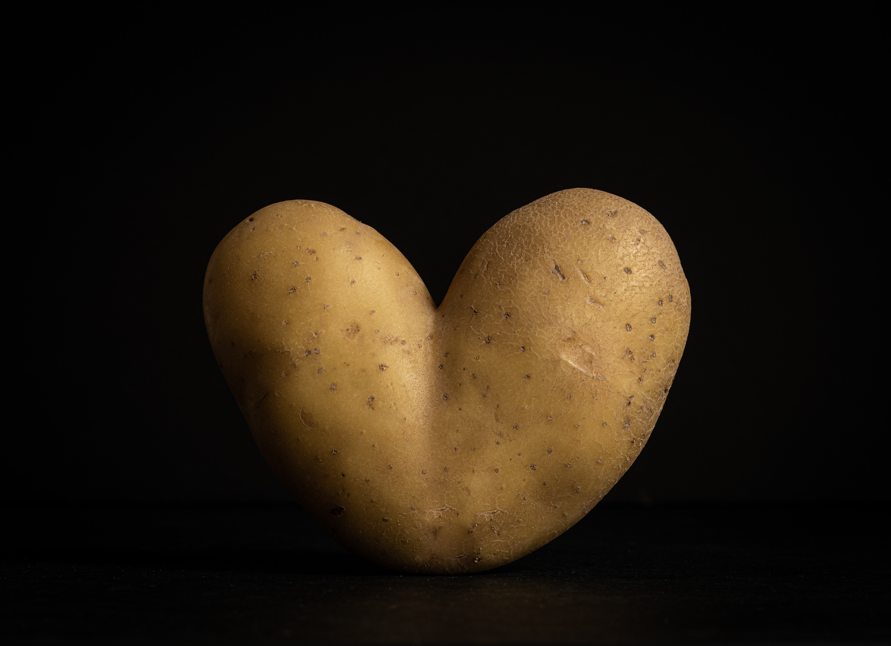

Ending Hunger
The weld county food bank is an organization that is helping get food to the people in Weld County that need it. The Weld County food bank has great programs to help people such as the backpack program that gives food to students who will not have food over the weekend.
Learn More